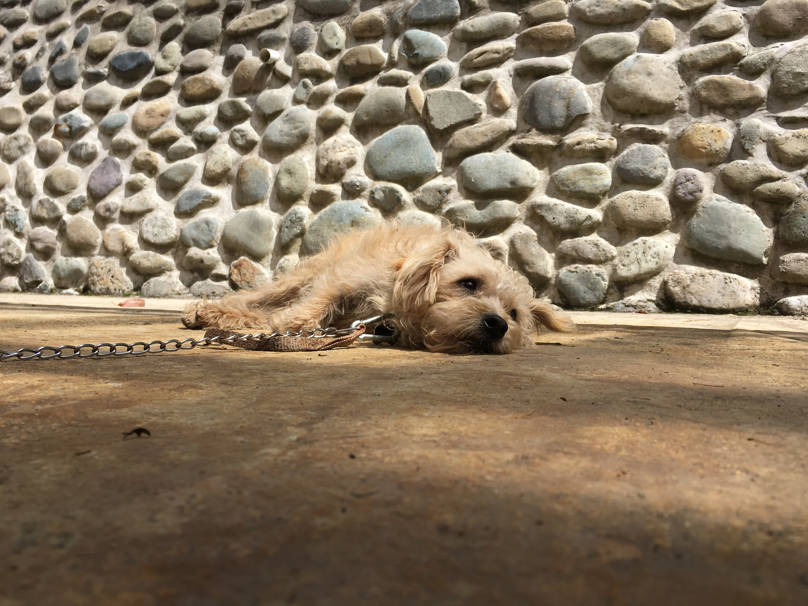
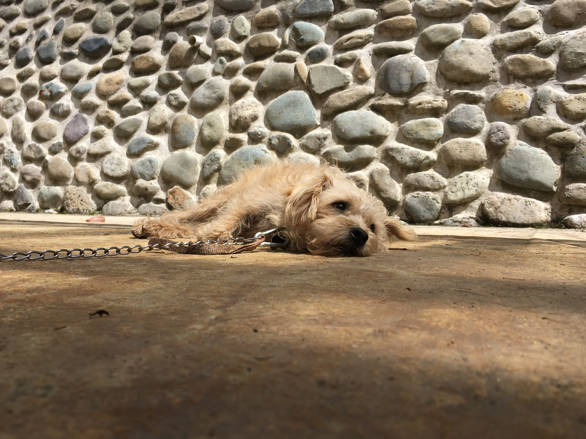

I was born in the crook of a granite Boulder, high in the mountains of Ecuador, a few miles south of the city of Cuenca.
My mother named me Juan Alberto Dominguez Garcia Diaz Rodrigo. She weaned me early and I never knew my father.
Alone and aware of my stature, I spent much of early life hidden under the brush of the mountain foliage and in the shadows. I ate grass and drank from the afternoon showers.
One evening I was caught in a torrential downpour. I was terrified. Soaking wet, I walked in the dark, shivering, searching for a place to hide from the rain.
I met a pack of hairless animals that lived in above ground burrows (quite cozy). They fed me more food than I'd ever had in my life.
I was gaunt, my coat was flea ridden and matted. They took me to a medicine man who took off all my hair, wetted me in a small waterfall, and poked me with shiny sticks.
They put a vine around my neck and tried to pull me down the road. Eventually they just picked me up and carried me.
Soon, I was in the belly of a large eagle. We spent a lot of time there. The eagle made my minder kinda grumpy, but I just slept1.
While walking to a different eagle I met an army dog who wore this totally bad ass black tactical vest.
Very early in the morning we arrived at "The United States".
I like my new life. My minder got me a bed and some dolls to play with. He gives me a lot of food. It's way better than grass and I don't have to do anything to get it.
He squeezes me and smacks his lips on my head.
We go out to meet other dogs and when I take a dump he likes to pick it up and carry it2. But if I ever try to watch him take a dump he will push me away and hide it.
I thought I would die during the rain storm but instead it brought me to a new life full of warmth, love, and happiness.
I am Poncho.
About the Author: